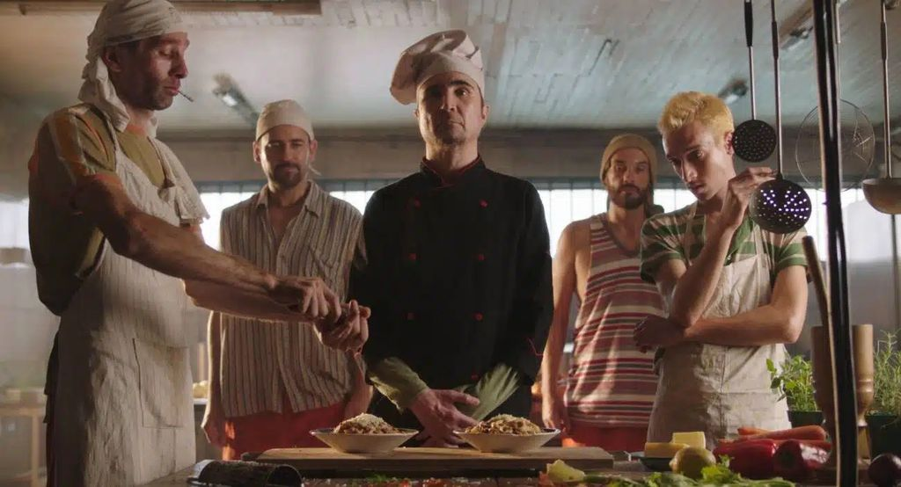

Filmes
Estomago 2 - O Poderoso Chef ganha teaser inédito
O aguardado trailer de "Estômago 2" chegou para aguçar o apetite dos cinéfilos brasileiros, prometendo uma continuação igualmente saborosa e intrigante ao filme original. Vamos debruçar-nos sobre as imagens reveladas e desvendar alguns dos segredos que este novo capítulo parece trazer.
O trailer nos reintroduz ao personagem Raimundo Nonato, interpretado por João Miguel, que retorna com sua paixão pela culinária e uma bagagem de experiências adquiridas no mundo gastronômico. A narrativa parece levar Nonato a novos desafios e explorações culinárias, mergulhando ainda mais nas complexidades de sua vida.
Entre os cortes dinâmicos do trailer, somos presenteados com uma série de conflitos e desafios que Nonato enfrentará. O equilíbrio entre os sabores agridoces da vida e as nuances da gastronomia continua a ser o fio condutor, indicando uma narrativa rica em camadas, onde a comida serve como metáfora para os altos e baixos da existência.
Além da performance brilhante de João Miguel, o elenco parece ser um banquete de talento, com novos personagens trazendo suas próprias dinâmicas à história. As cenas sugiram encontros, confrontos e alianças, todos temperados com a intensidade característica do filme original.
A cinematografia do trailer é um prato cheio para os amantes do cinema, com sequências visualmente apuradas que capturam a essência das cozinhas movimentadas, dos pratos suculentos e das emoções que se desenrolam. A estética parece ser uma continuação natural do visual marcante do primeiro filme.
Com base no intrigante trailer de "Estômago 2", podemos esperar uma continuação que não apenas satisfaz o paladar cinematográfico, mas também aprofunda as complexidades da existência através da culinária. Raimundo Nonato está de volta para servir uma dose generosa de emoção, sabor e reflexão, mantendo o público ansioso por mais um banquete cinematográfico brasileiro de primeira classe.
Novidades da semana